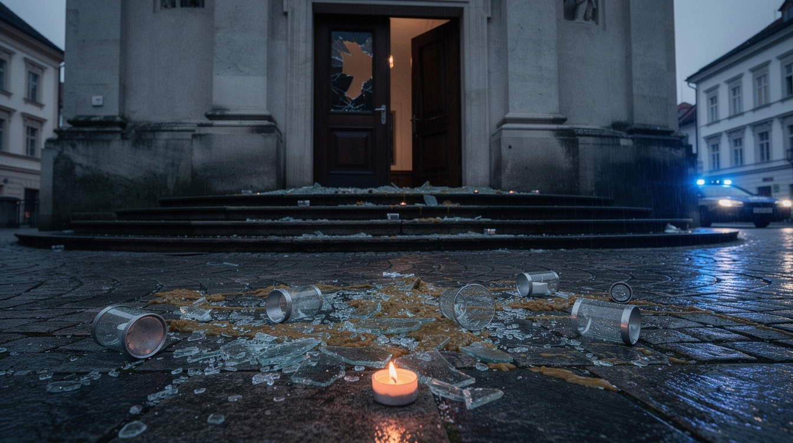

Wenn Christen die Opfer sind

71 Prozent. Das ist die Zahl, die der ORF groß macht.
So hoch sei die Aufklärungsquote bei Hate Crimes in Österreich. Das klingt nach einem Staat, der Hasskriminalität im Griff hat.
Die Zahl gilt für den Durchschnitt.
Bei christenfeindlichen Vorurteilsmotiven lag die Aufklärungsquote 2025 bei 52,6 Prozent. Fast jeder zweite registrierte Fall blieb ungeklärt. Das steht in derselben Tabelle des Innenministeriums.
133 solcher Motive erfasste die Polizei im vergangenen Jahr. 46 davon betrafen Gewaltkriminalität, 59 Menschen wurden als Opfer gezählt. Bei Angriffen auf Sakralstätten waren zwölf von 21 antireligiösen Motiven gegen christliche Einrichtungen gerichtet: Kirchen, Friedhöfe, Denkmäler.
Der ORF nennt die 133 Fälle. Er schreibt auch von einem Anstieg um 29 Prozent. Der Originalbericht zählt 111 Motive im Jahr 2024 und 133 im Jahr 2025. Das sind 20 Prozent.
Die entscheidende Zahl bleibt beim Sender unsichtbar: 52,6 Prozent.
Zum Vergleich: Bei muslimfeindlichen Motiven lag die Aufklärungsquote bei 74,6 Prozent, bei antisemitischen bei 72,9 Prozent. Die 71 Prozent sind korrekt. Sie sind nur die schönere Zahl.
Der Bericht zeigt keine allgemeine Erfolgsgeschichte. Er zeigt, wie unterschiedlich der Staat einzelne Formen religiös motivierter Kriminalität aufklärt.
Der ORF macht daraus die Durchschnittsnote. Wer wissen will, was bei Christen ankommt, muss die Tabelle selbst lesen.
Mehr dazu: Acht Jahre. Dann verschwunden.